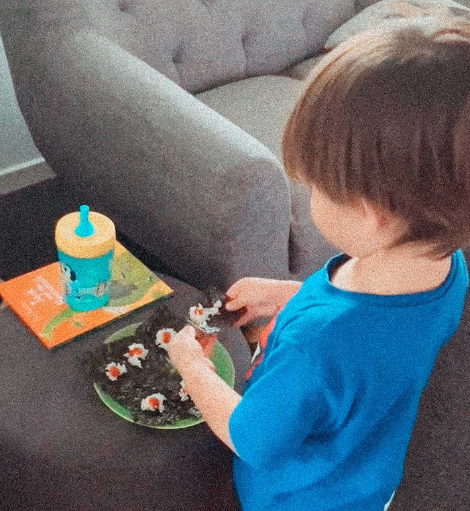
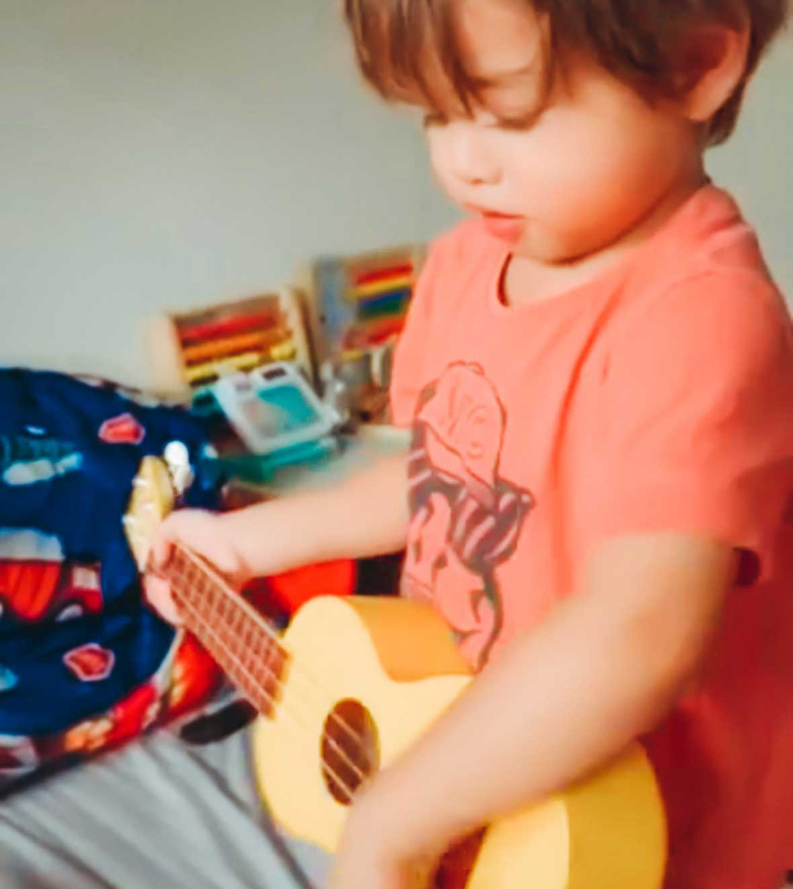

You are Invited!
Save the date:
22 July 2023, Saturday @ 2 PM AEST
see you in
Roarrr-ke is turning Three
Come join our dino-mite party where adventure awaits! Make this day extra special for our little dinosaur ranger—mark your calendars and celebrate with us. Although our celebrant was born on 24 July 2020, we are kicking off the party a little earlier because, well, weekends are just better for epic gatherings!
RSVP
Curious about the party's secret location, what thrilling adventures await, what to wear to be dinosaur safe, and what to pack? Checkout our Party Survival Guide to prepare for a roaring good time!
Party Info
His favorite dinosaur is T-rex! He has a a collection of T-rex toys he calls T-rex family.

Other than dinosaurs, he loves Marvel Superheroes! He learned their names before his ABCs.

His favourite food is seaweed-wrapped rice with ketchup!
He wants a pet cow. Not a baby cow, but a big cow he can ride!
He wakes up at 5:30 am every day and makes sure the whole household knows. Who needs an alarm clock when you have Roarke?

He loves music and will try any instrument. He has previously tried to climb up a stage to take a performer's guitar.